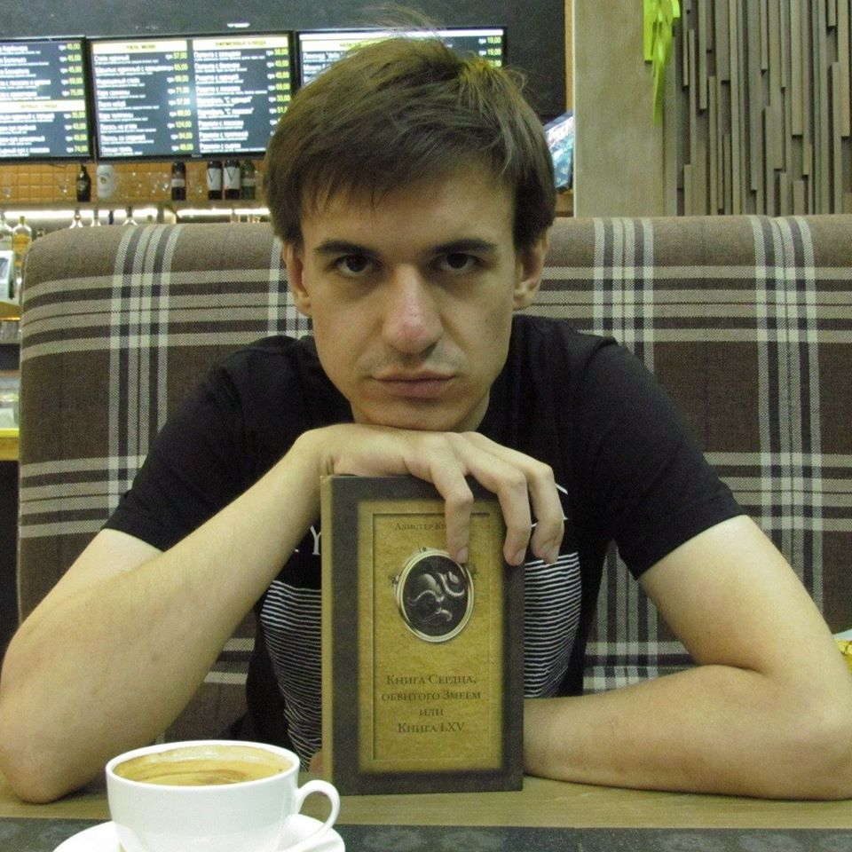
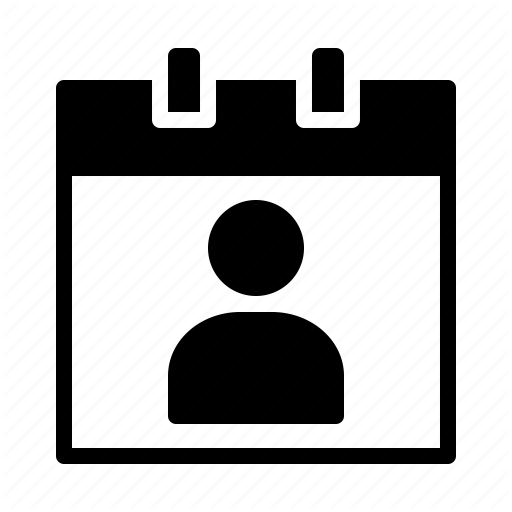
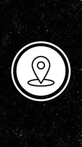
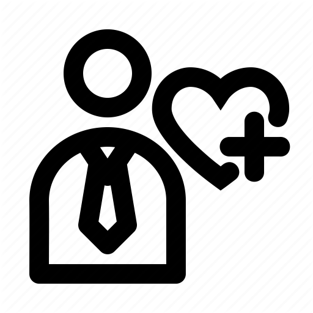

IVAN ILYIN

CONTACT DETAILS
Marital Status: single
Date of Birth: 26. 07.1989
Address: Porika 7-a, Kyiv
Mobile: +38 095-182-01-73
 Email: i1gorn@ukr.net
Email: i1gorn@ukr.net
 Skills
Skills
- Teaching, translation, interpreting
 Education
Education
2012 - 2013
Donetsk National University
Master of linguistics
2009 - 2012
Horlovka State Pedagogical Institute of Foreign Languages
Additional qualification: teacher and translator
2005 - 2009
Donetsk Pedagogical College
Specialty: English and foreign literature
Work experience
October 2013 – Present – “Calderys” company - translator
Activities and responsibilities:
- Interpreting at everyday meetings, official meetings, and metallurgical works;
February 2014 – September 2014 – Laboratory assistant, Lecturer, Donetsk National Medical University
Activities and responsibilities:
- giving English lessons to students who have medical specialties;
- development of working plans, tests, tasks for exams;
- development of my own methods of teaching
September 2015 – 2018 teacher (English), Ukrainian Humanities Lyceum Kyiv Taras Shevchenko National University
July 2018 – present time – TLS Contact, Visa Application Center of Great Britain, call center team leader
Languages
Russian: native;
Ukrainian: native;
English: fluent;
German: basic;
Interests
Music, literature and foreign languages.